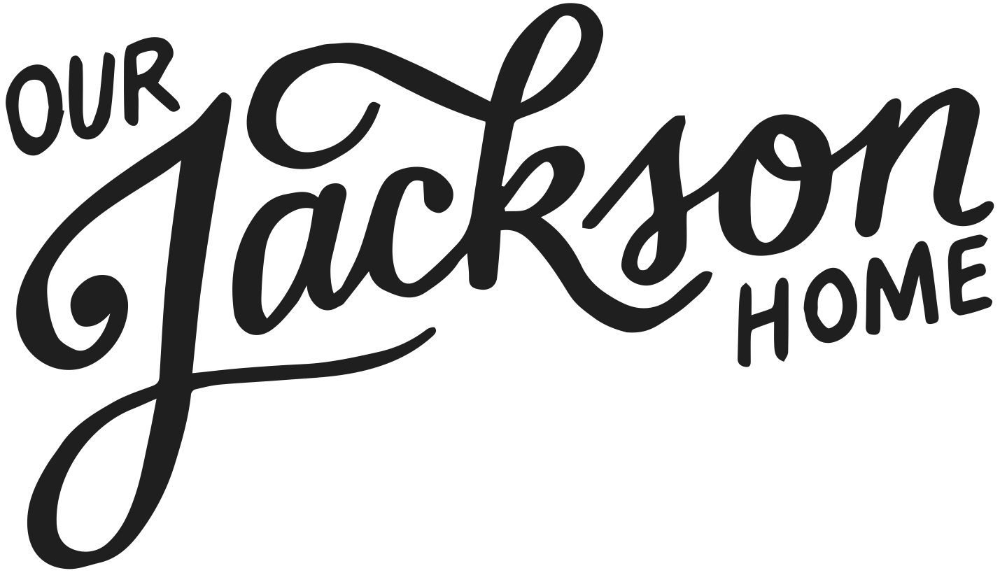

Basic Information
You can expect theCO to check in periodically to see how the project is going, as well as providing two screencasts throughout the semester describing and explaining the project.
For the guidelines for this year's project, watch the video here.
Projects get more challenging as students move from 1st year and beyond. All projects are evaluated based on creativity, functionality, and how well it shows knowledge of the material. Students should keep in mind the site needs to be complete and functional.
First-Year Students
For first year students there are three elements (Treehouse badges, a project and an interview) that play into their ability to attain the prize. Students must earn a minimum of 150 badges through Treehouse to participate in the contest (they can earn an additional 100 badges that will also go towards their total achievements). 1 badge = 1 achievement. Students will complete a project by themselves or with one other team member to build a 5 page website for up to 200 achievements. The last element of the competition is an interview, which is worth up to 100 achievements. 550 is the top amount of achievements available.
Second- and Third-Year Students
For second and third year students-- it's all about the project and the interview. Students will complete a project by themselves or with one other team member for up to 200 achievements. Projects must be uploaded to GitHub and students must email a link to their site once complete (by March 18th, 2016). They will be scored on creativity, functionality, and how much knowledge is shown of the material. Projects should focus less on showing off and more on answering the questions "Does it do its job?" and then "Does it look good?".
Project Option One: Our Jackson Home
Create a website or an app which will advance Our Jackson Home's mission to "celebrate the people and the stories of the city we all love". This can be done with a notification feature which alerts community members to new blog articles, information, and/or notification about community events, or any variety of other items found on their website.
Project Option Two: CO:de Catalyst
Create a website or app which will advance CO:de Catalyst's mission to "teach students how to build a website, learn to code, build an application, or start a business". Use your experience as a first-year student and CO:de Catalyst competitor to complete your project.